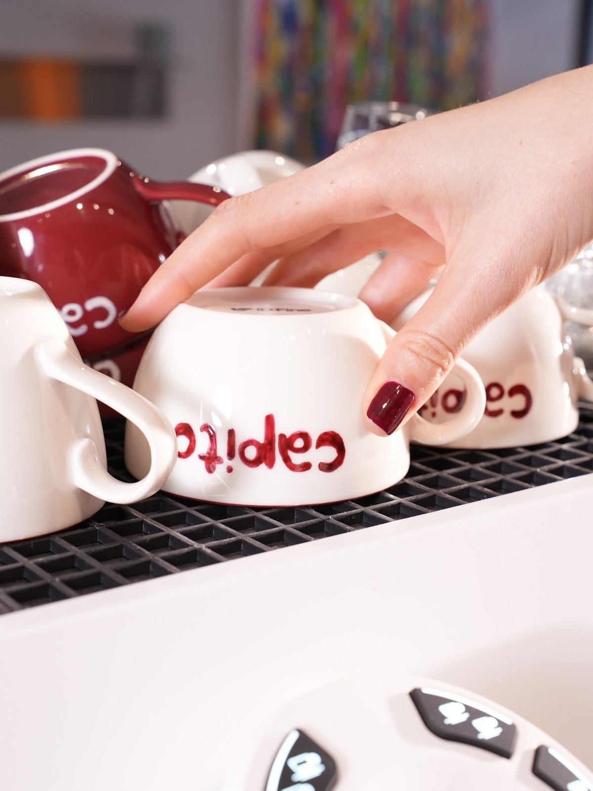
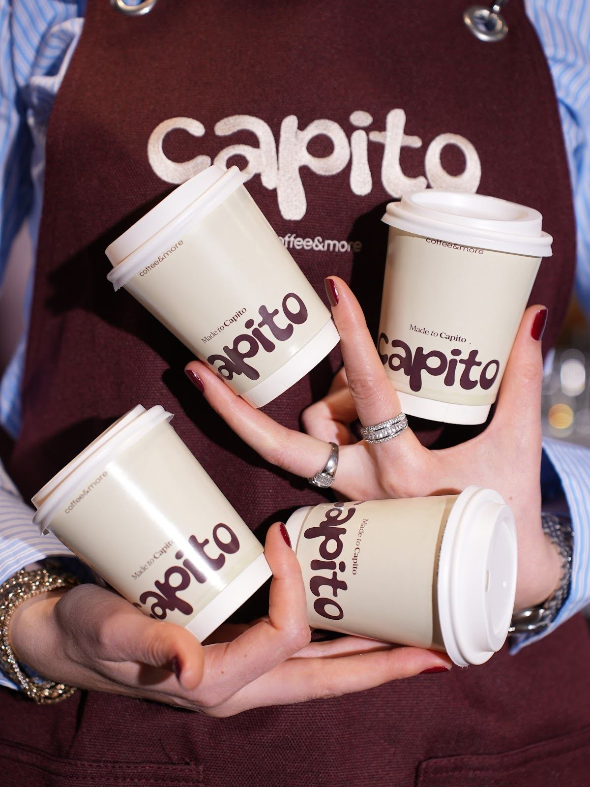
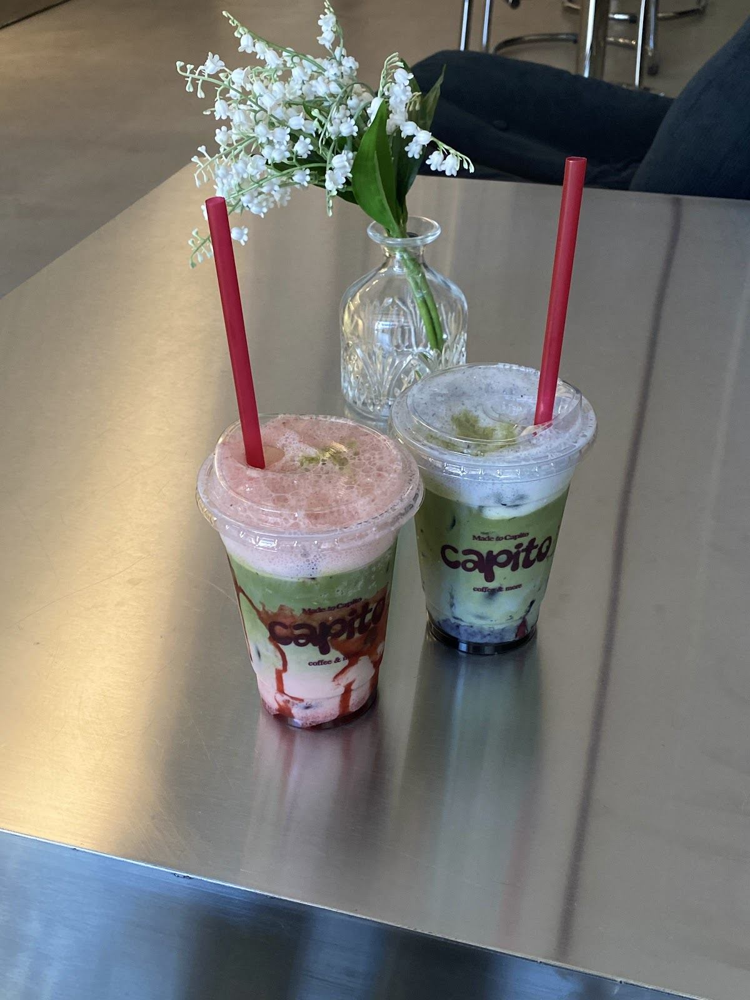

Fincan fincan Capito.
Güne başlarken, işlerin arasında ya da arkadaşınızla buluştuğunuzda.
Mimaroba, Büyükçekmece
Bir fincanla başlayın. İster sohbeti uzatın, ister günün arasında kendinize biraz zaman ayırın.
Google’da 4,8 / 5 · 90 yorum ↗
Sıcak bir fincan ya da soğuk bir içecek. Bugünün molasını siz seçin.

Güne başlarken, işlerin arasında ya da arkadaşınızla buluştuğunuzda.

Renkli bardaklar ve uzun sohbetler için soğuk bir mola.
Güncel menü, seçenekler, fiyat ve alerjen bilgisi için işletmeden bilgi alabilirsiniz.
Menü için bizi arayınCapito’nun içinden
Plaklar, kitaplar, farklı oturma köşeleri. Bir kahveye eşlik edecek sohbeti de yanınıza alabilirsiniz.
Haritada Capito ↗Misafirlerimizin gözünden
“Kahveleri, içecekleri, tatlıları gerçekten inanılmaz.”Berke CssYorumu Google’da okuyun ↗
“Çalışanların ilgisi ve genel atmosferiyle birlikte, her zaman tekrar tercih edilebilecek keyifli bir mekân.”Müleyke ÇimenYorumu Google’da okuyun ↗
“Kahveler güzel çalışma ortamı da sessiz her şey güzel.”Franz LizstYorumu Google’da okuyun ↗
Google yorumlarından kısa alıntılar. Puan ve yorum sayısı 2 Kasım 2026 tarihinde kontrol edilmiştir.
Tam konum için Google Haritalar bağlantısını kullanabilirsiniz.
Güncel çalışma saatleri ve menü bilgisi için telefonla bize ulaşabilirsiniz.